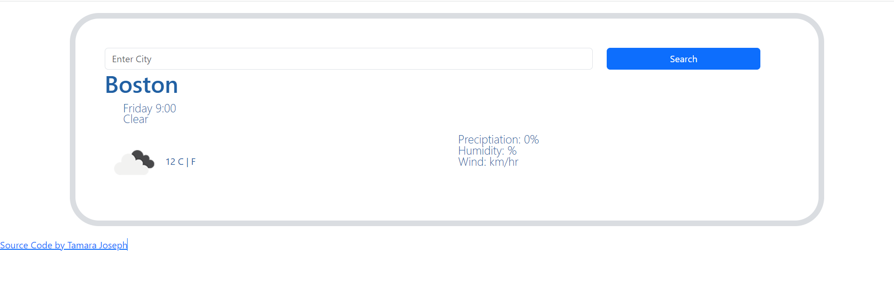

About Me
Future Front End Developer


I am a Pharmacy Technician at Dana Farber. I attended FDU for a
bachlor's degree in Criminology. Job Taks: • Fill more than 200
prescriptions daily • Perform data entry for prescriptions • Train
new technicians on daily pharmacy practices, such as counting
medications, data entry, proper HIPPA procedures with patients among
other tasks • Implement new training practices to decrease
medication errors by 50% in the last 6 months • Interact with
healthcare professionals to take prescriptions over the phone and
work through medications that are non-formulary with patients’
insurance to support timely and proper processing of prescriptions •
Consult with insurance company representatives to complete claims
processing and retrieve overrides for various situations like
emergency or vacation supplies to maintain patient adherence to
medications